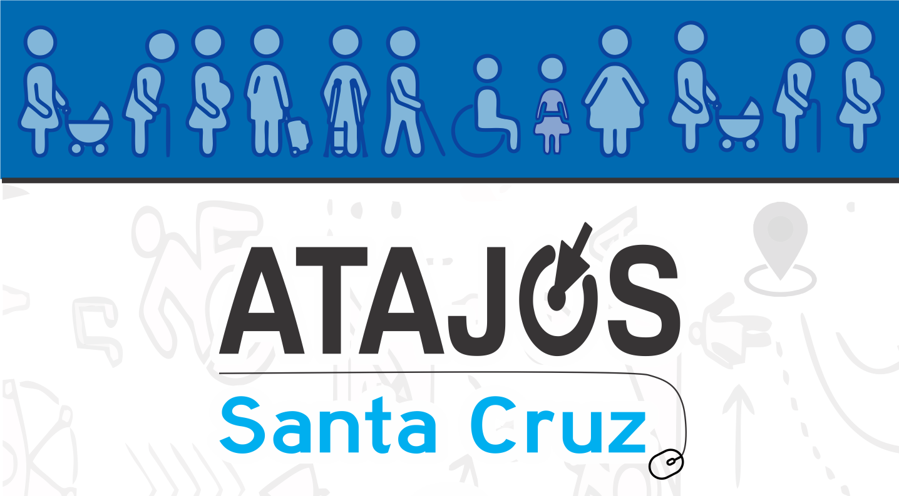

<ion-content class="page5">
  
  <button id="home-button2" ion-button outline color="calm" full large style="font-size:20px;" on-click="goToROGallegos()">
    Río Gallegos
  </button>
  <button id="home-button6" ion-button outline color="energized" full large style="font-size:20px;" on-click="goToMunicipios()">
    Municipios
  </button>
  <button id="home-button9" ion-button outline color="energized" full large style="font-size:20px;" on-click="goToComisionesDeFomentos()">
    Comision de Fomentos
  </button>
  <button id="home-button7" ion-button outline color="energized" full large style="font-size:20px;" on-click="goToParajes()">
    Parajes
  </button>
  <button id="home-button9" ion-button outline color="energized" full large style="font-size:20px;" on-click="goToOtros()">
    Otros
  </button>
  <button id="home-button8" ion-button outline color="assertive" full large style="font-size:20px;" on-click="goToUrgencias()">
    Urgencias
  </button>

  <!-- Contacto -->
  <button on-click="goToContacto()">
    DESARROLLADORES
  </button>

  
</ion-content>

<!--

-->
